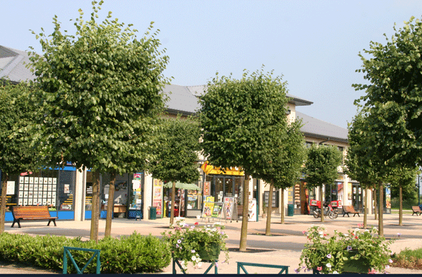
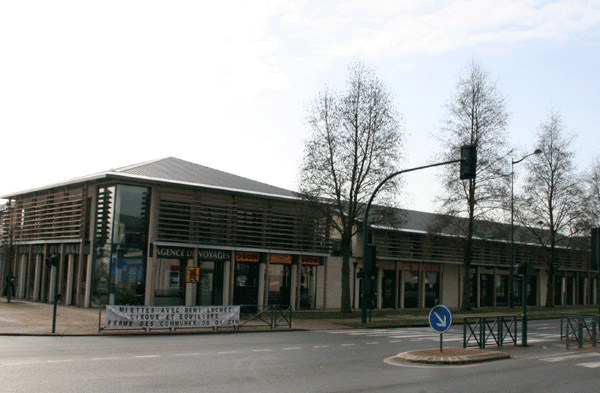
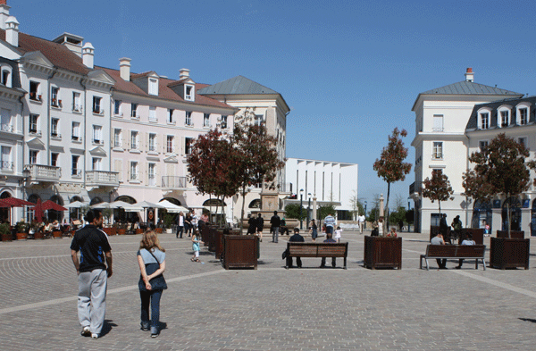

À proximité du plus grand parc de tourisme, au cœur du
Val d’Europe, la commune attire un espace marchand très varié : de l’espace commercial international, à la vallée village, aux commerces de proximité.
Où faire vos achats ?

Place de Saria, rue de Saria, boulevard Robert Thiboust et cour de la Forge - Serris bourg

Le Forum du ParcParc d'entreprises Goodman - Serris bourg

Place de Toscane et cours de l'ElbeCentre Urbain